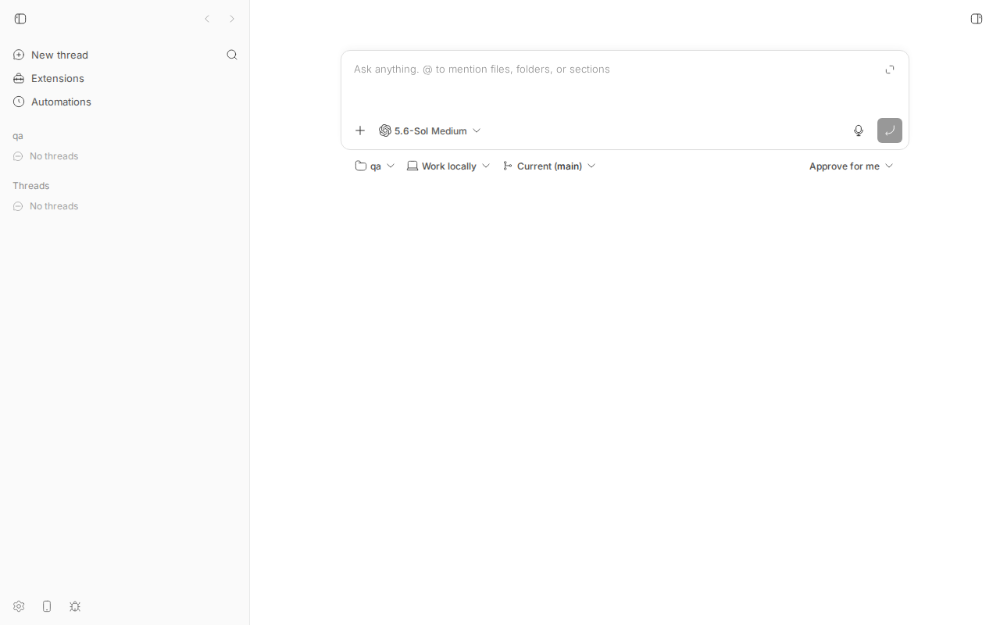
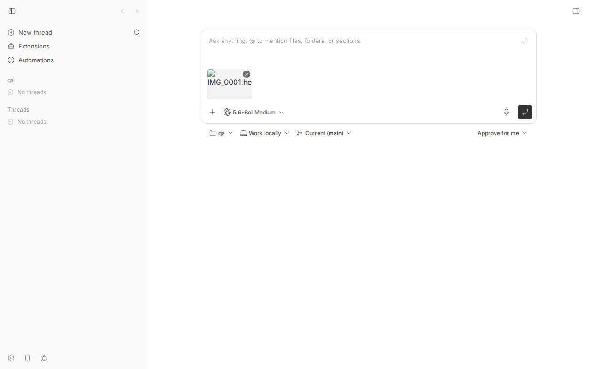
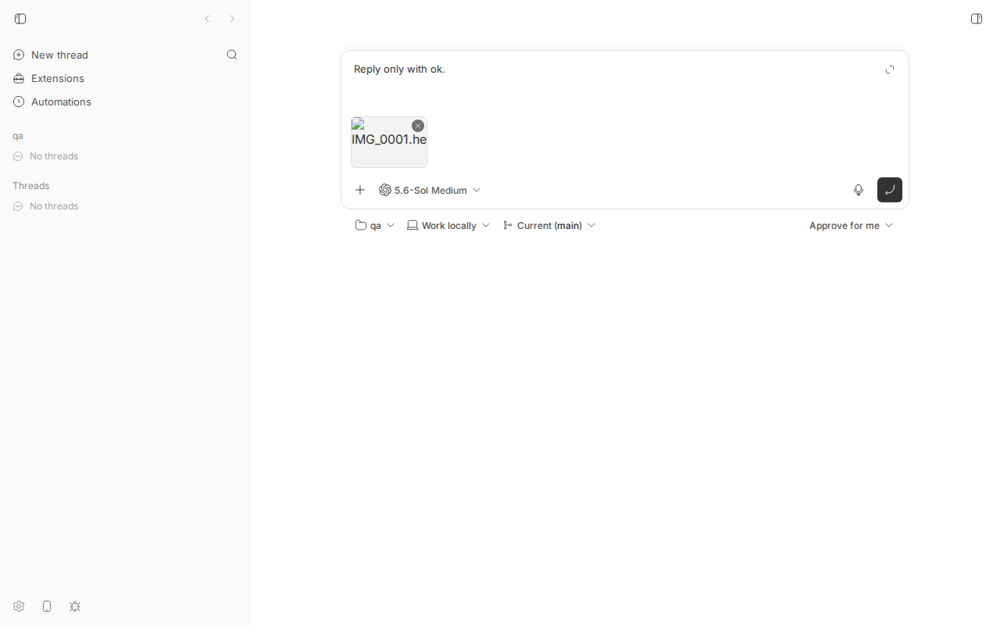
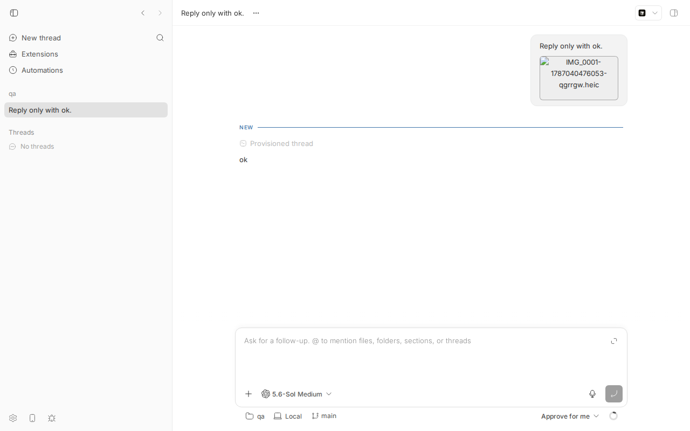
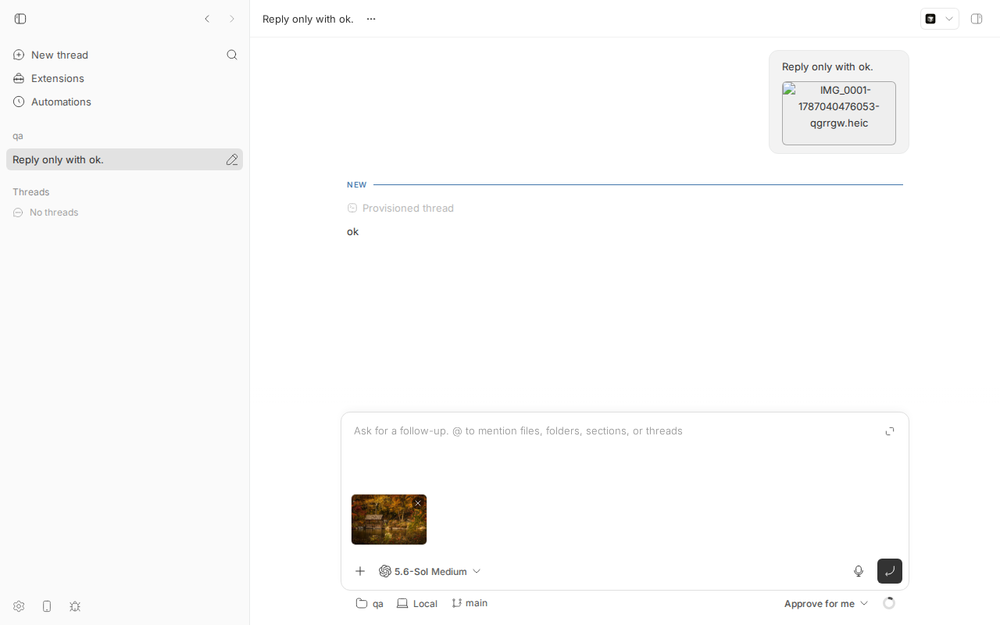

#1670 · HEIC images aren't rendered in the UI
TL;DR
When you paste (or attach) a .heic photo — the default format iPhones shoot in — into the bb composer, the thumbnail in the composer and, after sending, the image in the chat history both show as a broken-image icon with the file name next to it (exactly the reporter's screenshot). PNG/JPEG pasted the same way render fine.
The mechanism is simple: bb uploads the file bytes untouched (POST /api/v1/projects/:id/attachments), classifies anything whose browser MIME type starts with image/ as a localImage, and later serves the very same bytes back as content-type: image/heic from GET …/attachments/content. The web app and the Electron desktop app render that URL in a plain <img>. Chromium has no HEIC/HEIF decoder (only Safari on Apple platforms decodes HEIC natively), so the <img> fires error and naturalWidth stays 0. There is no transcoding step anywhere in bb — not on upload, not on serve, not in the client — so nothing ever turns the HEIC into something the renderer can draw.
Deeper than the UI symptom: the model does not see the picture either. In my repro the Codex provider staged the HEIC into the thread's Attachments dir and Codex sent "image content omitted because it could not be processed" in place of the image. So HEIC attachments are silently useless end to end, which argues for fixing this once at the upload boundary (transcode to JPEG/PNG when storing) rather than only in the renderer.
Claims vs findings
| Claim | Status | Evidence |
|---|---|---|
| jpg and png images pasted into chat render well | Verified | Control: the same picture as PNG pasted into the follow-up composer renders (naturalWidth 480), see 1670-control-png.png and step5.out. |
| HEIC images pasted into chat show up broken in the chat history | Verified | Real HEIC (nokia sample, ftyp mif1/heic) pasted through the composer's handlePaste path, sent to a codex thread; the timeline <img> for it has naturalWidth 0 and shows the broken-image glyph + filename (1670-timeline-broken.png, step4.out). Same in the composer strip before sending (1670-composer-broken.png). |
| (implicit) it is a rendering problem in "the UI" | Verified, but narrower | The UI is a plain <img src=…/attachments/content?path=x.heic>; the failure is Chromium's missing HEIC decoder plus bb never transcoding. In Safari (WebKit on macOS/iOS, which decodes HEIC natively) the same URL would probably render — not tested here (no Apple hardware). |
| (implicit) only the display is affected | Refuted | Codex received image content omitted because it could not be processed for the staged .heic (codex-rollout-heic-excerpt.txt). Claude Code gets a [Attached image … use the Read tool] marker pointing at a .heic file, which its Read tool does not decode as an image either (inferred from the bridge code, not run). |
{kind=link}
{kind=link}
{kind=link}
Environment
- bb
16ceb3a54(main, 2026-08-18), worktree/home/sawyer/projects/bb/.claude/worktrees/wf_242c3e11-a10-40.git fetch origin main: nothing between16ceb3a54..origin/maintouches attachments upload/serve or the composer/timeline image rendering (checkedapps/server/src/services/projects/attachments.ts,AttachmentPreview.tsx,ConversationAttachments.tsx,user-attachment-images.ts,useComposerAttachmentUploads.ts). Not fixed on main. - Linux 7.0.0-29-generic, node v24.18.0, codex-cli 0.147.0 (provider
codex, model 5.6-Sol). Browser: dev-browser managed HeadlessChrome/145.0.7632.6 (same Blink image decoders as the Electron desktop shell). - Dev instance: app
http://localhost:12237, serverhttp://localhost:20237, host daemon:28237, data dir/home/sawyer/.bb-dev/projects-bb-.claude-worktrees-wf_242c3e11-a10-40-f6f1ab958ff9. Projectproj_2yvd4nxtww(local path/tmp/1670-qa, hosthost_tt6rxgwxvk), threadthr_csyg3pfycr. - Sample HEIC: 1670/repro/sample.heic (293,608 bytes, from nokiatech/heif's public sample set). What it should look like (decoded with ffmpeg on the host, downscaled): 1670-heic-decoded-by-ffmpeg.png.
{kind=link}
{kind=link}
Minimal reproduction
Precondition: build the worktree, start your dev instance (pnpm install --frozen-lockfile --prefer-offline && pnpm exec turbo run build && scripts/bb-dev-app current) and note the App/Server URLs; the scripts below hardcode :12237/:20237 and the project id — replace with yours. dev-browser (Playwright CLI) is used for the browser steps; each script is under 1670/repro/.
- Create a project on the local host (from
bb machine list):$ curl -s -X POST http://localhost:20237/api/v1/projects -H 'content-type: application/json' \ -d '{"name":"qa","source":{"type":"local_path","path":"/tmp/1670-qa","hostId":"host_tt6rxgwxvk"}}' {"id":"proj_2yvd4nxtww", ...} - Upload the HEIC through the same API the composer uses and fetch it back. Expected: an image the browser can draw. Actual: the untouched HEIC bytes with
content-type: image/heic(upload-heic.json, content-headers.txt):$ curl -s -X POST http://localhost:20237/api/v1/projects/proj_2yvd4nxtww/attachments -F "file=@sample.heic;type=image/heic" {"type":"localImage","path":"sample-1787040358944-bkl621.heic","name":"sample.heic","mimeType":"image/heic","sizeBytes":293608} $ curl -s -o /dev/null -D - "http://localhost:20237/api/v1/projects/proj_2yvd4nxtww/attachments/content?path=sample-1787040358944-bkl621.heic" HTTP/1.1 200 OK content-type: image/heic content-length: 293608 - Prove the renderer cannot decode it (step1-open-and-decode.js): open the app, fetch that URL into an
Image. Actual (step1.out):$ dev-browser --headless run step1-open-and-decode.js http://localhost:12237/ bb {"status":200,"type":"image/heic","size":293608,"imgEvent":"error","naturalWidth":0,"ua":"… HeadlessChrome/145.0.7632.6 …"} - Paste the HEIC into the new-thread composer exactly the way a user does — a
pasteevent whoseclipboardDatacarries aFileof typeimage/heic— (step3-paste-heic.js). The composer'shandlePastetakes the file branch (defaultPrevented: true), uploads it and shows the thumbnail. Actual (step3.out): thumbnail is broken.$ dev-browser --headless run step3-paste-heic.js paste: {"fileType":"image/heic","size":293608,"defaultPrevented":true} attachment imgs: [ { "src": "http://localhost:12237/api/v1/projects/proj_2yvd4nxtww/attachments/content?path=IMG_0001-1787040476053-qgrrgw.heic", "alt": "IMG_0001.heic", "complete": true, "naturalWidth": 0, "naturalHeight": 0 } ]
Before: empty new-thread composer (project qa).
The moment the bug shows: after the paste the attachment strip has a broken-image glyph with "IMG_0001.he…" instead of a thumbnail. - Type
Reply only with ok., press Enter (step4-send.js). The thread is created, Codex answersok, and the user message in the chat history shows the broken image (step4.out):url after submit: http://localhost:12237/projects/proj_2yvd4nxtww/threads/thr_csyg3pfycr timeline attachment imgs: [ { "src": "…/attachments/content?path=IMG_0001-1787040476053-qgrrgw.heic", "alt": "IMG_0001-1787040476053-qgrrgw.heic", "complete": true, "naturalWidth": 0, "naturalHeight": 0 } ]
Triggering: prompt typed, HEIC still attached, about to press Enter. 
Chat history: the user bubble (top right) renders the HEIC as a broken image with its stored filename — the reporter's screenshot. - Control (step5-control-png.js): paste the same picture as PNG into the follow-up composer. It renders (
naturalWidth 480), while the HEIC in the history above stays broken:
Bottom: PNG thumbnail (autumn cabin) renders in the composer. Top: HEIC bubble still broken in the same view. - What the model got (codex-rollout-heic-excerpt.txt, from
~/.codex/sessions/…for this turn):{"type":"input_text","text":"<image name=[Image #1] path=\"…/thread-storage/thr_csyg3pfycr/Attachments/IMG_0001-1787040476053-qgrrgw.heic\">"}, {"type":"input_text","text":"image content omitted because it could not be processed"}, {"type":"input_text","text":"</image>"}
Unit-level repro (fails on main)
1670/repro/repro-1670-heic-attachment.test.ts (lives at apps/server/test/public/repro-1670-heic-attachment.test.ts in my worktree; uses the real Hono app + in-memory SQLite via withTestHarness). It uploads a real HEIC as image/heic, asserts the server classifies it as localImage (it does — that is why the UI puts it in an <img>), then asserts the content endpoint serves a Chromium-decodable type. The last assertion fails on 16ceb3a54 with localImage attachment served as image/heic. Run: cd apps/server && pnpm exec vitest run test/public/repro-1670-heic-attachment.test.ts (set BB_1670_HEIC=/path/to/sample.heic if the sample is elsewhere; it falls back to a minimal HEIC ftyp box). Output: repro-test.out.
FAIL test/public/repro-1670-heic-attachment.test.ts > repro #1670: HEIC prompt attachment > serves an uploaded HEIC localImage in a Chromium-decodable format AssertionError: localImage attachment served as image/heic, which Chromium cannot decode: expected false to be true
// Repro for get-bb/bb#1670: HEIC images pasted into the composer are stored and
// served verbatim as image/heic. Chromium (web app + Electron desktop) has no
// HEIC decoder, so the <img> that the composer / timeline renders from
// GET /api/v1/projects/:id/attachments/content is broken.
//
// This test encodes the contract a fix needs: an uploaded image attachment
// classified as `localImage` must be served in a format Chromium can decode.
// It FAILS on main (16ceb3a54) because the served content-type is image/heic.
import { readFile } from "node:fs/promises";
import { describe, expect, it } from "vitest";
import { uploadedPromptAttachmentSchema } from "@bb/server-contract";
import { readJson } from "../helpers/json.js";
import { seedHostSession, seedProjectWithSource } from "../helpers/seed.js";
import { withTestHarness } from "../helpers/test-app.js";
// Formats Chromium's image decoder handles (see also the list in
// apps/app/src/components/secondary-panel/git-diff/useDiffFileContentsRequester.ts).
const CHROMIUM_DECODABLE_IMAGE_TYPES = new Set([
"image/avif",
"image/bmp",
"image/gif",
"image/jpeg",
"image/png",
"image/svg+xml",
"image/webp",
"image/x-icon",
"image/vnd.microsoft.icon",
]);
const SAMPLE_HEIC =
process.env.BB_1670_HEIC ?? "/tmp/bb-reports/issues/1670/repro/sample.heic";
describe("repro #1670: HEIC prompt attachment", () => {
it("serves an uploaded HEIC localImage in a Chromium-decodable format", async () => {
await withTestHarness(async (harness) => {
const { host } = seedHostSession(harness.deps, { id: "host-1670" });
const { project } = seedProjectWithSource(harness.deps, {
hostId: host.id,
});
// Real HEIC (ISO BMFF, ftyp mif1/heic). Falls back to a minimal ftyp box
// if the sample file is not present so the test still runs anywhere.
const bytes = await readFile(SAMPLE_HEIC).catch(
() =>
new Uint8Array([
0x00, 0x00, 0x00, 0x18, 0x66, 0x74, 0x79, 0x70, 0x6d, 0x69, 0x66,
0x31, 0x00, 0x00, 0x00, 0x00, 0x6d, 0x69, 0x66, 0x31, 0x68, 0x65,
0x69, 0x63,
]),
);
const form = new FormData();
form.set(
"file",
new File([bytes], "IMG_0001.heic", { type: "image/heic" }),
);
const uploadResponse = await harness.app.request(
`/api/v1/projects/${project.id}/attachments`,
{ body: form, method: "POST" },
);
expect(uploadResponse.status).toBe(201);
const uploaded = uploadedPromptAttachmentSchema.parse(
await readJson(uploadResponse),
);
// The server classifies it as an image (so the UI renders it in <img>) ...
expect(uploaded.type).toBe("localImage");
const contentResponse = await harness.app.request(
`/api/v1/projects/${project.id}/attachments/content?path=${encodeURIComponent(uploaded.path)}`,
);
expect(contentResponse.status).toBe(200);
const contentType = contentResponse.headers.get("content-type") ?? "";
// ... but serves bytes the renderer cannot decode. On main this is
// "image/heic" -> assertion fails.
expect(
CHROMIUM_DECODABLE_IMAGE_TYPES.has(contentType.split(";")[0] ?? ""),
`localImage attachment served as ${contentType}, which Chromium cannot decode`,
).toBe(true);
});
});
});
Root cause
The whole path is "store bytes, serve bytes, put URL in <img>". Nothing knows or cares what codec the image uses; only the MIME prefix image/ is inspected.
- Composer paste → upload. PromptBoxInternal.tsx#L1731-L1743:
handlePastecollectsclipboardData.itemsof kindfileand callsonAttachFiles; that goes throughuseComposerAttachmentUploads→useUploadPromptAttachment(project-mutations.ts#L191-L204) →sdk.projects.attachments.upload. No client-side conversion. - Server stores verbatim and classifies by MIME prefix. attachments.ts#L140-L169:
const isImage = (file.type || "").startsWith("image/"); … const bytes = Buffer.from(await file.arrayBuffer()); await writeFile(outputPath, bytes); return { type: isImage ? "localImage" : "localFile", path: storedName, name: file.name, mimeType: file.type || undefined, … };Chromium reportsimage/heicfor.heicfiles, so the attachment becomes alocalImage— the UI will try to display it, not just link it. - Server serves verbatim with the extension's MIME. attachments.ts#L172-L189 (
mimeTypes.lookup("x.heic")=image/heic) and the route at projects.ts#L904-L917. - UI renders the URL in a plain
<img>. Composer strip: AttachmentPreview.tsx#L66-L75 (anylocalImageorimage/*MIME is treated as displayable, L8-L13). Timeline: ConversationAttachments.tsx#L149-L157, src built by user-attachment-images.ts →buildProjectAttachmentContentUrl. - Chromium cannot decode HEIC/HEIF (patent-encumbered HEVC; Blink ships no decoder; the Electron desktop app is Chromium too). Verified:
imgEvent: "error",naturalWidth: 0in step 3. So the<img>falls back to the broken-image glyph +alt(the filename), which is precisely what the screenshot in the issue shows. bb itself already "knows" HEIC is not previewable elsewhere: the diff file preview allow-list at useDiffFileContentsRequester.ts#L163-L172 excludesimage/heic; the prompt attachment path just never checks.
Deeper issue. The same untouched HEIC is what the host daemon stages for the provider (prompt-attachments.ts) and what Codex is handed as localImage (session-params.ts#L612-L613). Codex could not process it either (step 7). Claude Code gets a text marker pointing at the file (bridge.ts#L2486-L2488) and its Read tool handles png/jpg/gif/webp, not HEIC. Anthropic's and OpenAI's APIs accept only JPEG/PNG/GIF/WebP. So a HEIC attachment is a no-op for the agent while looking to the user like it was sent — a worse failure than the broken thumbnail.
Proposed fix (first principles)
Fix it once, at the server upload boundary, so every surface (web, desktop, CLI/SDK uploads, providers) benefits: in storeAttachment (apps/server/src/services/projects/attachments.ts), when the incoming file is image/heic/image/heif (or has a .heic/.heif extension — the MIME can be empty on some platforms), decode it and store a JPEG (or PNG when the source has alpha) instead; return mimeType: "image/jpeg", the new .jpg stored name and the new sizeBytes, keeping name as the original for display. Apply the 10 MB image limit to the transcoded output as well as the input.
- Decoder choice.
sharpis already a dependency (apps/appdevDependency for icons) but its prebuilt libvips does not include HEIC/HEVC decoding, so it will not work out of the box. A pure-JS/WASM option that works on every host isheic-decode/heic-convert(libheif + libde265 compiled to WASM, ~1–2 MB, no native build). Decode is CPU-bound (a 12 MP iPhone photo takes roughly 1–3 s); doing it once at upload time is acceptable, and the upload UI already shows a pending state. - Failure mode. If decoding fails (corrupt file, HEIF sequence, unsupported 10-bit), return a 400
invalid_request"HEIC image could not be converted" rather than storing an unusablelocalImage; the composer already surfaces upload errors (bottomAttachmentError). - Contract.
UploadedPromptAttachmentalready carriesmimeType/path, so no wire shape changes for the app; no daemon protocol change either (the daemon just fetches whatever bytes the server has), so noHOST_DAEMON_PROTOCOL_VERSIONbump is needed. Add a note in the attachments route docs that HEIC/HEIF uploads are transcoded. - Test. The repro test above becomes the regression test (upload real HEIC →
localImageserved asimage/jpegand decodable, i.e. starts withFF D8). - Alternatives considered. (a) Client-side conversion with
heic2anybefore upload: fixes UI and provider too, but only for the web/desktop composer, not CLI/SDK uploads, and ships a WASM decoder to every browser. (b) Serve-time transcoding inreadAttachment: fixes only display, not the provider. (c) Rejecting HEIC uploads with a clear error: honest and cheap, and strictly better than today's silent breakage, if a decoder dependency is unwanted. - Also worth doing regardless: render an explicit "unsupported image format" tile (with a download link) instead of a raw broken
<img>whenonErrorfires inAttachmentPreview/ConversationAttachments, so any future undecodable format degrades gracefully.
PR review
No linked open PRs.
Related issues
- #1762 browser_screenshot returns "OK" and no image — different path (tool result images), but same "image never reaches the model" class.
- No prior issue about HEIC/attachment transcoding found (searched "image", "attachment", "paste", "screenshot").
Appendix
Commands run
pnpm install --frozen-lockfile --prefer-offline
pnpm exec turbo run build
git checkout 16ceb3a54 # worktree had been created at origin/main a108fa7ef; relevant files identical
scripts/bb-dev-app current # App :12237, Server :20237, daemon :28237
mkdir -p /tmp/1670-qa && cd /tmp/1670-qa && git init -q && echo hi > README.md && git add -A && git commit -qm init
BB_SERVER_URL=http://localhost:20237 node packages/scripts/dist/commands/run-cli.js machine list --json # host_tt6rxgwxvk
curl -s -X POST http://localhost:20237/api/v1/projects -H 'content-type: application/json' -d '{"name":"qa","source":{"type":"local_path","path":"/tmp/1670-qa","hostId":"host_tt6rxgwxvk"}}'
curl -sL -o sample.heic https://github.com/nokiatech/heif/raw/gh-pages/content/images/autumn_1440x960.heic ; file sample.heic # ISO Media, HEIF Image
curl -s -X POST http://localhost:20237/api/v1/projects/proj_2yvd4nxtww/attachments -F "file=@sample.heic;type=image/heic"
curl -s -o /dev/null -D - "http://localhost:20237/api/v1/projects/proj_2yvd4nxtww/attachments/content?path=sample-1787040358944-bkl621.heic"
dev-browser --headless --idle-timeout 20m --timeout 60 run 1670/repro/step1-open-and-decode.js
dev-browser --headless run 1670/repro/step2-snapshot.js
dev-browser --headless run 1670/repro/step3-paste-heic.js
dev-browser --headless --timeout 150 run 1670/repro/step4-send.js
ffmpeg -i sample.heic -vf scale=480:-1 sample-decoded-small.png # host-side decode for the control/expected image
curl -s -X POST http://localhost:20237/api/v1/projects/proj_2yvd4nxtww/attachments -F "file=@sample-decoded-small.png;type=image/png"
dev-browser --headless run 1670/repro/step5-control-png.js
grep -rl qgrrgw.heic ~/.codex/sessions | xargs grep -o '.\{300\}heic.\{200\}'
BB_SERVER_URL=http://localhost:20237 node packages/scripts/dist/commands/run-cli.js thread log thr_csyg3pfycr
cd apps/server && pnpm exec vitest run test/public/repro-1670-heic-attachment.test.ts
git fetch origin main && git log 16ceb3a54..origin/main --oneline -- apps/server/src/services/projects/attachments.ts apps/app/src/components/promptbox apps/app/src/components/thread/timeline/ConversationAttachments.tsx apps/app/src/lib/user-attachment-images.ts
pnpm dev:stop
Thread event (client/turn/requested) for the repro turn
{"type":"client/turn/requested","data":{"source":"spawn","initiator":"user","input":[{"type":"text","text":"Reply only with ok.","mentions":[]},{"type":"localImage","path":"IMG_0001-1787040476053-qgrrgw.heic"}],"target":{"kind":"thread-start"},…}}
Note the persisted localImage carries only path; the MIME type the UI/server act on is re-derived from the extension at serve time.
Files
- step1.out, step3.out, step4.out, step5.out — dev-browser outputs
- upload-heic.json, upload-png.json, content-headers.txt, create-project.json
- codex-rollout-heic-excerpt.txt, thread-log.txt
- repro-1670-heic-attachment.test.ts, repro-test.out
- sample.heic, sample-decoded-small.png
{kind=link}
Things checked and ruled out
- Not an upload failure: 201 with correct size; bytes round-trip byte-for-byte (content-length 293608).
- Not a MIME sniffing/serving bug:
content-type: image/heicis correct for the bytes; the browser simply lacks a decoder. Serving asimage/jpegwould not help. - Not the paste code path specifically: the same broken thumbnail appears if the file is uploaded via the API and referenced (step 2/3), and the timeline uses a separate component with the same
<img>. - Not fixed on origin/main as of 2026-08-18 (see Environment).